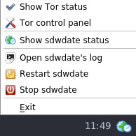

We believe security software like Kicksecure needs to remain Open Source and independent. Would you help sustain and grow the project? Learn more about our 14 year success story and maybe DONATE!
sdwdateDocumentationGeminiPrevious
page: sdwdateIndex page:
DocumentationNext page:
Gemini
sdwdate-gui: Secure Distributed Web Date Graphical User Interface
sdwdate-gui systray with popup on mouse hover
sdwdate - Secure Distributed Web Date - systray - graphical user interface (GUI) - Homepage
Overview
sdwdate-gui is an optional graphical user interface (GUI) for sdwdate.
sdwdate can optionally be configured to block networking until sdwdate finishes, preventing potential leakage of the time before it is changed.
Rationale
sdwdate-gui's purpose is to provide users with a clear, interactive way to monitor and manage time synchronization.
1. Visual Monitoring:
- Displays the status of sdwdate (a secure time-synchronization tool).
- Shows whether the system time has been synchronized with secure onion time sources.
2. User-Friendly Notifications:
- Shows systray error icon if there are issues with time synchronization.
- Helps ensure the user knows whether network time synchronization has been completed, a critical factor for security.
- The GUI makes this process more transparent and accessible to users who prefer a graphical interface.
3. Debugging and Control:
- Offers a way to manually interact with or troubleshoot sdwdate if needed.
- Provides easy access to diagnostic information (log) for advanced users to ensure the synchronization service is functioning as intended.
- Encourages advanced users to monitor, review, audit sdwdate's operation.
In summary, sdwdate-gui simplifies the interaction with the sdwdate service, ensuring secure and anonymous time synchronization.
Screenshots
Figure: sdwdate-gui Systray with Popup on Mouse Hover

Figure: sdwdate-gui Functions

Figure: sdwdate-gui Successful Time Fetching

Troubleshooting
Kicksecure for Qubes - Unexpected Autostart of kicksecure
Follow instructions multiple Kicksecure-Qubes Kicksecure. [1]
Configuration
Disable Autostart
The following instructions disable autostart of sdwdate-gui but do not disable autostart of sdwdate.
1. Platform specific notice.
- Qubes users note: Apply the
following steps Kicksecure (
kicksecure-18) Template. [2] - Other Kicksecure users note: No special notice.
2. Create file
/etc/sdwdate-gui.d/50_user.conf. [3]
Open file /etc/sdwdate-gui.d/50_user.conf in an editor
with administrative ("root") rights.
1 Select your platform.
2 Notes.
- Sudoedit guidance: See Open File
with Root Rights for details on why using
sudoeditimproves security and how to use it. - Editor requirement: Close Featherpad (or the chosen text
editor) before running the
sudoeditcommand.
3 Open the file with root rights.
sudoedit /etc/sdwdate-gui.d/50_user.conf
2 Notes.
- Sudoedit guidance: See Open File
with Root Rights for details on why using
sudoeditimproves security and how to use it. - Editor requirement: Close Featherpad (or the chosen text
editor) before running the
sudoeditcommand. - Template requirement: When using Kicksecure-Qubes, this must be done inside the Template.
3 Open the file with root rights.
sudoedit /etc/sdwdate-gui.d/50_user.conf
4 Notes.
- Shut down Template: After applying this change, shut down the Template.
- Restart App Qubes: All App Qubes based on the Template need to be restarted if they were already running.
- Qubes persistence: See also Qubes Persistence
- General procedure: This is a general procedure required for Qubes and is unspecific to Kicksecure-Qubes.
2 Notes.
- Example only: This is just an example. Other tools could achieve the same goal.
- Troubleshooting and alternatives: If this example does not work for you, or if you are not using Kicksecure, please refer to Open File with Root Rights.
3 Open the file with root rights.
sudoedit /etc/sdwdate-gui.d/50_user.conf
3. Paste.
disable=true
4. Save.
5. Done.
The process of disabling autostart of sdwdate-gui is now complete.
See Also
Development
The sdwdate-gui source code can be found here.
Interested readers can follow open sdwdate-gui development discussion here.
Footnotes
- ↑ Qubes bug report: https://github.com/QubesOS/qubes-issues/issues/5253
- ↑ To change this setting per App Qube instead for
all App Qubes, alternatively Qubes users might want to use folder
/usr/local/etc/sdwdate-gui.din App Qubes instead of the Template since that folder in AppVM would persist after reboot and does not require changes in Template.
1. Create folder/usr/local/etc/sdwdate-gui.d. sudo mkdir -p /usr/local/etc/sdwdate-gui.d 2. Then edit file/usr/local/etc/sdwdate-gui.d/50_user.confinstead of/etc/sdwdate-gui.d/50_user.conf. - ↑
 Kicksecure/sdwdate-gui
Kicksecure/sdwdate-gui
Categories: Documentation